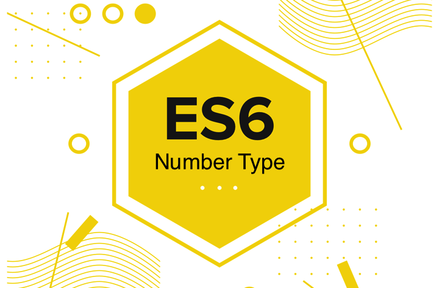

이 글을 읽고 (ES6) Number 객체와 함수를 이어서 보는 걸 추천한다.
자료형
ES에서 숫자형은 단 하나의 자료형 뿐이다.
Double: 자바나 C 등등의 언어에서 실수를 표현하기 위한 자료형, 8Byte = 64Bit
Double-precision floating-point format
- 부호(sign)를 표현하기 위한 1비트 (+, -)
- 지수부(exponent part)를 표현하기 위한 11비트
- 가수부(fraction part)를 표현하기 위한 52비트
유효 범위: -(253-1) ~ 253-1
즉 ES에서 정수형(Integer)은 존재하지 않는다.
모든 숫자는 부동 소수점(Floating Point) 형태로 표현되는 실수(Real Number)이다.
실수는 소수 표현이 가능하고, 실수를 표현하는 방법으로 고정 소수점(Fixed Point)와
부동 소수점(Floating Point)이 있으니 직접 찾아보길 바란다.
문제점
- 실수 계산
|
|
ES에서는 위와 같이 소수점 계산에서 고질적인 문제를 안고 있다.
이는 아마 IEEE에서 제정한 부동소수점 표현 형식인 IEE754의 고질적인 문제라고 보여진다.
실수 표현 문제 발생 이유 or 오차 발생 이유
자바스크립트의 숫자는 십진 부동 소수점 숫자로 접근하는데 반해
그 내부 동작 원리는 이진 부동 소수점 숫자이기 때문에 오차가 발생한다.
원문 보기
JavaScript’s numbers are usually entered as decimal floating-point numbers,
but they are internally represented as binary floating-point numbers.
That leads to imprecision.
위와 같은 문제는 IEE754를 사용하는 Java에서도 동일하게 발생한다.
이를 위한 해결방안으로 Number.EPSILON이 나왔다.
- 신뢰할 수 없는 범위
부동 소수점에 대한 이해
수의 표현범위가 다른 int와 float, 그리고 신뢰할 수 없는 부동소수점
부동 소수점의 단점은 일정 범위를 넘어가면 계산의 결과를 신뢰할 수 없다는 점이다.
ES에서 쓰이는 숫자형에서 신뢰할 수 있는 범위는 위에 적어논 바와 같다.
|
|
특수한 숫자들
또한 숫자형에서는 특수한 네 가지 값이 존재한다.
- NaN(Not a Number)
- (+)Infinity
- -Infinity
- -0(Negative Zero)
|
|
음수 0
+0과 -0은 같다??
하지만 아래 현상은 어떻게 설명할 수 있을까?
필요성
You Don’t Know JS: Types & Grammar - Zeros
스피드나 x, y와 같은 방향 같은 요소를 쓰는 어플리케이션에서 만약 -0이 0으로 바뀐다면,
속도나 방향 등등의 정보를 잃게될 것이다.
There are certain applications where developers use the magnitude of a value to represent one piece of information (like speed of movement per animation frame) and the sign of that number to represent another piece of information (like the direction of that movement).
In those applications, as one example, if a variable arrives at zero and it loses its sign, then you would lose the information of what direction it was moving in before it arrived at zero. Preserving the sign of the zero prevents potentially unwanted information loss.`
진수 리터럴
2진수
수학식: 11(2)
기타 프로그래밍 언어: 0b11, 0B11
in ES
in ES6
8진수
수학식: 71(8)
기타 프로그래밍 언어: 071
in ES
in strict mode
ES5의 strict mode에서는 8진수 리터럴이 적용되지 않는다.
왜냐하면 ES5에는 8진수 문법이 존재하지 않기 때문이다.
그럼에도 불구하고 브라우저 벤더들은 비표준 요소인 8진수 리터럴을 지원하게끔 구현하였다.
따라서 strict mode에 따라서 8진수 리터럴의 사용 가능 여부가 달려있다.
strict mode in ECMAScript 5 forbids octal syntax.
Octal syntax isn’t part of ECMAScript 5,
but it’s supported in all browsers by prefixing the octal number with a zero:
0644 === 420 and “\045” === “%”.`
in ES6
16진수
수학식: FF(16)
기타 프로그래밍 언어: 0xFF, xFF, hFF, etc.
in ES
주의사항
|
|
10진수를 제외한 진수 리터럴은 정수만 표현 가능하다.
.을 붙인다고 해서 실수가 되는 게 아니라 Number.prototype.1로 접근을 하게 된다.
10진수의 경우에는 실수 취급한다.
|
|